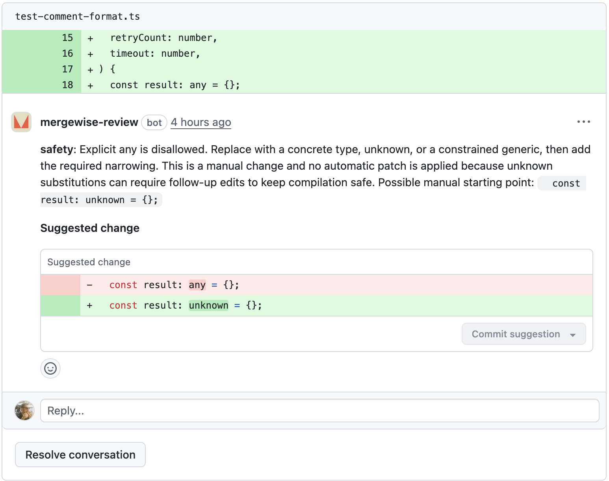

Code review for teams that care
Ship code worth maintaining.
Mergewise reviews every pull request for design quality — anti-patterns, code smells, and structural problems that erode maintainability over time.
How It Works
Install the App
Add Mergewise to your GitHub repository. One click, no config file needed to start.
Push a PR
Open a pull request. Mergewise analyses the diff using AST parsing and structural LLM review.
Get Suggestions
Receive inline refactoring suggestions with confidence scores. Concrete improvements, not vague warnings.
Features
AST Pattern Detection
Parses your code into abstract syntax trees. Detects anti-patterns and code smells structurally, not with regex guesswork.
LLM-Powered Review
Uses structural signals from the AST as context for LLM analysis. The model sees code structure, not just text.
Confidence Gating
Every finding carries a confidence score. Low-confidence noise never reaches your PR. You only see what matters.
Rule-Driven Checks
A growing catalogue of rules targeting real-world anti-patterns and code smells. Each rule is tested against known fixtures.
Refactoring Suggestions
Every finding includes a concrete suggestion — a design pattern to apply, a principle to follow, or an idiom to adopt.
Clean Code Standards
Reviews against established design principles, architectural patterns, and language idioms. Keeps your codebase readable and maintainable as it grows.

See It in Action
Mergewise posts inline suggestions directly on the lines that matter. Each finding explains the smell, the principle behind it, and how to refactor.
- Inline on the diff, not a wall of text
- Confidence score on every finding
- Copy-pasteable refactoring suggestions
They Catch Bugs. We Improve Design.
AI code reviewers are great at finding bugs, security issues, and correctness problems. Mergewise does something different.
What Others Do Well
- Bug detection and correctness checks
- Security vulnerability scanning
- Performance issue identification
- Code style and formatting
What Mergewise Adds
- Design quality and refactoring suggestions
- Anti-pattern and code smell detection
- Idiomatic, maintainable, readable code
- Structural analysis via AST
- Confidence-gated findings
FAQ
What languages does Mergewise support?
TypeScript and React are supported today with deep structural analysis. Support for additional languages is on the roadmap.
How is this different from ESLint?
ESLint catches syntax and style issues. Mergewise detects higher-level anti-patterns using AST analysis combined with LLM review — things like manual object construction that should use a factory, scattered event handling that should be consolidated, or prop drilling that suggests a missing context.
Will it spam my PRs with noise?
No. Every finding is confidence-gated. If the analysis isn't
confident enough, the finding is suppressed. You can also
configure thresholds and enable or disable specific rules
via a .mergewise.yml file.
Is it free?
Mergewise is open source and in active development. It's free to self-host. Pricing for a hosted service will be announced when it launches publicly.
How do I set it up?
Install the GitHub App on your repository. Mergewise analyses
pull requests automatically — no configuration file required
to start, though you can customise rules via a
.mergewise.yml file.